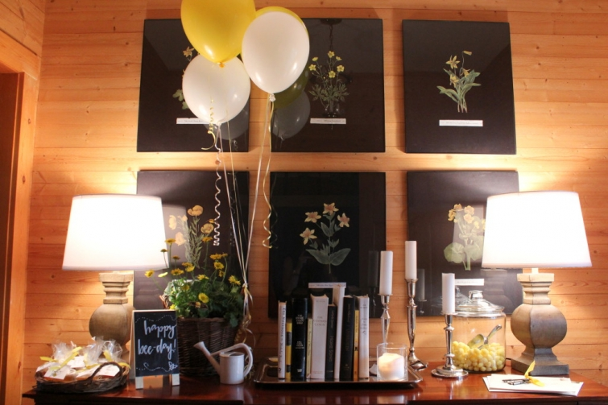
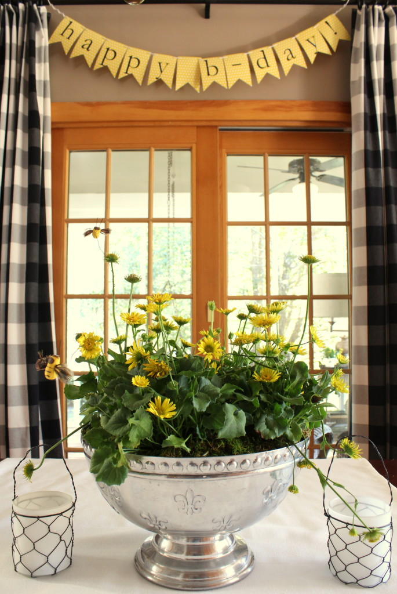

.png)
.PNG)
.PNG)
.PNG)
.PNG)
.PNG)
.JPG)
.JPG)
.PNG)
.PNG)


.jpg) It’s time to talk of a party today…and not just any party…a bee themed birthday party! 🙂
It’s time to talk of a party today…and not just any party…a bee themed birthday party! 🙂

A couple of weeks ago, we hosted a dinner party for my mother’s birthday. Â When our children were born, my mother did not want to be called any name that would be associated with old age…no Granny, Grandmother, Grandma, etc. for her.

So because her name is Betty, she/we decided that our children would simply call her “B,” and that is exactly what they have done since the time they could talk.

For the last couple of years, I know you have probably seen all the cute bee themed celebrations online…birthday celebrations, baby showers, (What-will-it-be parties) and even weddings (Love is sweet as honey receptions.)  I had been thinking a bee party for B would work perfectly for her birthday, and when Sur la Table’s spring catalog came out featuring  bee-related items, I knew this was the year for the party. 🙂
I loaded up on their spring cookie stamps, (that featured bees and beehives) a beehive cake pan, bee napkins, beehive and flower cookie cutters, and even a beehive drink dispenser for the party.
Then I planned a somewhat picnic/spring related menu: friend chicken, deviled eggs, potato chips, tomato sandwiches (cut in the shape of beehives), fruit salad, butterbeans, corn on the cob, and cucumber sandwiches (cut in the shape of flowers.)
(I used 2 different sized cookie cutters to make them.)
I found candy bumble bees in the baking/crafts section of Walmart and used them on the tomato sandwiches…
and the cakes.
Here are the sugar cookies that I used the spring stamps on.
Each guest had a mini-pound cake along with strawberries, blackberries, whipped cream, and a cookie (or two. 🙂 )
For party favors, I simply had single serving lidded containers of honey wrapped in cellophane bags tied with yellow ribbon.
Some bee stickers from Michaels worked great on the hand lettered tags.
And that was the bee party for B.  Of course you know I can never get a party done all by myself.  A big thank you goes to my brother who was here for the afternoon and helped blow up balloons, tie them outside in the wind, cut up watermelon, shuck the corn, and entertain us with his helium inhaled voice. 🙂  And a thank you to our daughter and her boyfriend who always jump in to help when they are here for a party.  You guys are the best “volunteer” help around! 🙂
I hope you enjoyed seeing the party. Â It was a fun one to pull together and perfect for spring!
Until next time…


.PNG)
What a lovely cottage. Looks like the perfect place when you want to get away from everything. The color selections are very soothing!
What an adorable theme! Once again you have outdone yourself!
Question: Is your mother as ‘crafty’ and talented as you? You have such a gift – one I crave but sadly don’t have. My late-mother was much like you – able to carry out a theme to the last detail. Unfortunately, that gene skipped me. 🙂 Good job! Happy Birthday to ‘B’ – I could have been a ‘B’, but to my grands, I’m Grandmother all the way. Thanks for the clever idea.
———————————————————————
Hi Becky! My mother is definitely creative, but she uses most of her artsy skills in oil painting (something that I cannot do. 🙂 ) Thank you for the belated birthday wishes for her. I know you must enjoy your grandchildren!
Kelly
What an imaginative and fun party for your mum, Kelly. Wishing her a belated Happy Birthday! I’m sure she was thrilled with it all. As usual, you’ve created such unusual and delicious looking food ….and I’m sure it all tasted delicious too. It’s interesting how many don’t like the idea of being called Grandma, Gran, Nanny etc. I’ve always felt the same …but haven’t as yet come up with an alternative. Bee sounds sweet …. No doubt when the time comes the baby and I will think of something 🙂
Have a good week.
Rosemary
I need you to help me throw parties – yours are always the best! Love the cakes and cookies – so clever and the favors…adorable!! What a special party for your mother! Happy Sunday, Kelly ~
What a fun party for B. You are so thoughtful and creative AND a great daughter.
Kelly,
What an amazing party! I know your mother must have loved it.
The beehive cakes are perfect for a little pound cake. I also most of all like you have family helping you get ready for parties. That is making memories.
I wanted my grandaughter to call me Nana but she has yet to call me by that name. We will see what she comes up with.
Have a great weekend.
DiAnne
At my daughter’s request—-actually more of a command—I became Granny. When learning to text I shortened it to Grani, which I like better. Granny was my grandmother. My husband is Grumples—-long story!
—————————————————————-
I like Grani…has a cute vibe to it! Grumples? That one does sound interesting (and more serious in tone!)
Kelly
Kelly– You do the best, most thoughtful parties! Can I come sometime? I love to entertain, but have never really used a theme and run with it as you do so well. I also loved the party you threw for your husband. I’ll have to come up with a party and theme.And I love the your guests always get a favor to take home. Thanks for all your great ideas.
What a wonderful B-day theme for your mom! I just love everything 🙂 Bees, beehives, bee skeps, honey – all wonderful!!! I have a small collection of honeybee themed bears on my desk, and when I visited my cousin, she had almost the same ones 😉 Love the food, the colors – most of all, I LOVE the drink dispenser and will need to check that out at Sur La Table! Thanks for the bee-u-tiful post!!!♥ Happy Spring (we will ignore the need tonight and tomorrow to cover the outdoor plants lol)!!!
Oh, I love the name your mom chose. 🙂 What great inspiration for her birthday party! I love all the details. And such a southern menu. 😉 I’m hosting a wedding shower next week and we’re having cucumber sandwiches. Now, I am going to dig out my cookie cutter similar to yours. 🙂 Thanks for the inspiration!!
How adorable. Very creative, but that’s nothing new with you. Happy birthday to your “B”!!
Oh Kelly, as always, so fun and tastefully done. Missed you ! Happy B Day to your Mum
You are hands down the best party planner ever! Absolutely delightful!
Kelly, that is such a fitting idea for your mother’s party. And, what a special way for y’all to share your love with her…I know that she must have felt very blessed. It’s nice that you have some good helpers to make it all come together!
Kelly, my birthday is May 17th…I would like one of those BEE parties!:) I know your mama was delighted with her celebration. I just finished a sampler that featured Bees as my granddaddy was a bee man as they called them in North Georgia. I did it in his memory. And I like B as a Nana Name…so cute and easy to say!!
——————————————————————–
I’ll get right on a party for you Arlene! LOL How sweet of you to do a sampler in memory of your grandfather. I bet it turned out bee-utiful (sorry…couldn’t resist. 🙂 )
B was definitely easy for our children to say!
Kelly
Love, love, love this ‘bee’ birthday theme. Well done. My mom is also named Betty, but all the grandchildren call her ‘Mam’.
I know the posts (and parties) take a lot of time, effort, and creativity to pull together and share, but after reading your blog, I’m always so inspired. And it reminds me (once again) that our homes and families are definitely worth the time and investment!
Kelly, besides being the “travel” agent you are now my go to “party” planner. You rock!
Hi Kelly! Wow I couldn’t wait to discover this party and I’m not disappointed: it’s amazing!! The little beehive cakes are so cute!love everything about this party and it worked perfectly well with your black and yellow Spring decor! 😉
Congratulations again and Happy Birthday to “B” who was certainly so pleased by the party you throwed for her!
Xo
Claire
You certainly have a flair for parties! I’m a bee lover too and all your details are perfect. Grandmas are very special people and deserve a great party. Love your posts. Cynthia
Bee-utiful!!! You are so clever! I love all of the bee ideas! The cakes were adorable! The candy bumble bees and bee stickers are too cute! Your banner, the napkins, and your curtains were perfect touches! One of my favorite people in the whole world was a lady named Beatrice and we called her Nanny Bea. So bees/beas are special to me. I also want to tell you what our daughter (Paige) calls my mom. My mom’s name is Geneva. Paige couldn’t say that and started calling her Geebeejimba. The name stuck. Even my dad calls her Geebee or Geebeejimba now. I hope I get a name that cute when the time arrives.
——————————————————————-
That is quite the name that Paige calls her grandmother! It is so funny what names stick when children can’t pronounce things. 🙂 Geebee is super cute!
Thank you for your kind words about the party. It was easy to pull together with all the things from Sur la Table, and our spring color scheme really worked well with it.
Kelly
I can’t bee-lieve you have done it again! Yes, I can! Everything is so cute! I know a great time must have been had by all! I love the little pound cakes, the cookies, and how ever did you happen upon the bee hive beverage dispenser? What a happy atmosphere you created for your mom’s party. I know she felt like the queen bee! Who wouldn’t have? Love the favors too. Thanks for sharing your creative genius, Kelly.
Kelly,
You never disappoint. I just love this bee themed party. I once helped a friend do a bee themed baby shower. I even made the mother-to-be some thank you cards to use that I stamped bees on. I also painted some terra cotta pots that I put some plants in for decorations and then let her keep too. She planted the plants outside and used the bee themed pots to hold baby things in her nursery. Your foods all look super cute and delicious as usual. Thanks for sharing. Take care.
Dawn
———————————————————————–
Love your ideas for the bee party, Dawn! Why didn’t you send all these to me before I did this one? LOL
Just kidding. I may steal your painted pot idea for another party in the future. Thank YOU for sharing. 🙂
Kelly
Kelly, your creativity is endless; what a fabulous party to honor your beloved mmother. The bee theme scream spring, sweetness and a honey-making fun time. Thanks for sharing.
You throw the best parties! The recipients of all your fabulous parties are very impressed with all the details I’m sure, I know I am!!
Everything is simply beautiful and I know your mother enjoyed it.
Hi Kelly, You give the sweetest parties! I know your Mom loved it! Take care, Anne
Kelly, what a fun party this would have been to plan! Cute sandwich idea and the beverage dispenser is a great find. The cakes and cookies are too clever. Have a great weekend.
Everything is so cute. Every detail was perfect!
I love this!!! My son and his wife started keeping honey bees a few years ago. It was so much fun we got a hive a year ago and this Spring our other two children have started their own. I have been thinking about having a bee themed party for my son’s birthday in May. His name is Ben and when he was little we called him B….so a bee themed party is great on many levels.
I also agree with your mom….I picked a name other than grandma for a reason. My son named my mother “Big Nana” when he was 2, I thought it was cute and appropriate because his other grandma was very short and my mother was very tall. Many years later my I realized my mother was not crazy about the name and I could see her point. Since all of my children have mother-in-laws that are on the short side (or at least not as tall as me) I realized I might get “Big Nana” too, so I decided to pick my own name. I am Mimi and I will never forget the first time my first grandchild said my name. It works well for me, I just sign everything M and it can stand for Mimi, Mom or Martha.
———————————————————————-
What a great story Martha! I can certainly understand not wanting “big” tied to your name. 🙂 Glad you settled upon Mimi, and yes, the M works for all your names! Love it!
Kelly
Such a great idea! Everything was perfect! The food, colors and theme! It was a wonderful spring party. I bet Ms B was delighted with her special day! Fun, fun!!
Kelly,
I love bee-themed anything since my last name begins with a B. This is wonderful. I love some of the details like the bee hive pound cakes with fresh fruit. I’m sure your mom was honored and thrilled with the party!
xo,
Karen
Your party was wonderful. I know I need some kind of bee word to describe it, but not nearly that creative. My husband provides all of those. Any who…it is just wonderful. You can throw me a party anytime.
Really cute! Happy Birthday to your Mom! I felt the same way when I found out I would be a grandma, but I couldn’t come up with a suitable substitute, so I just got used to grandma. Now it doesn’t bother me in the least! Once you hold the first one, who cares what they call you, as long as they call you! I wanted Mimi, but my daughters thought that was silly…I didn’t!
I have had my eye on those beehive cake molds, but figured I wouldn’t use them often enough to take up space to store them. But I love the drink dispenser!
Belated Happy Birthday wishes to your Mom. I am with her, as I go by Noni, rather than Grandma to our twin grandchildren. Your party was Bee…utiful. 🙂 I’m going to have to check out Sur La Table, as if William Sonoma isn’t dangerous enough! Loved all your “Bee” items. It turned out so cute Kelly.
How darling and delicious!